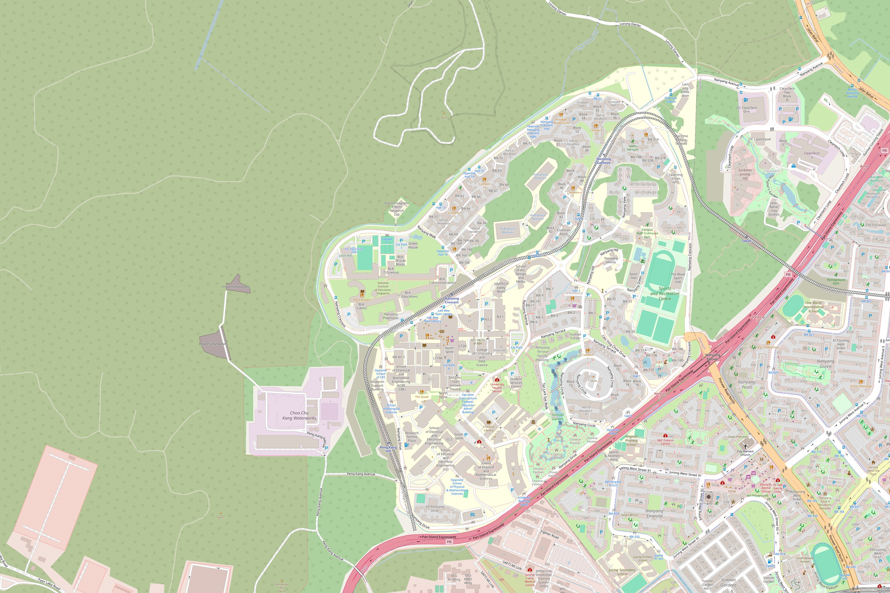

SENTINEL
Start
REPLAY
Table 1
T1

NTU-01
Sensor site
NTU-01
The Arc, Learning Hub North
CAM-01
ONLINE
RF-01
ONLINE
MIC-01
ONLINE
Saved recordings
Open recordings
Drag to move. Scroll to zoom.
+
−
Map data: OpenStreetMap contributors
Recordings
ID
Source
Sensors
Length
Decisions
Camera
CAM-01
1
ALARM
NO SIGNAL
Example cause: weather
RF receiver
2
NO SIGNAL
Example cause: congested spectrum
Microphone
MIC-01
3
NO SIGNAL
Example cause: airport noise
Detection
STANDBY
Inputs in this decision
CAM
RF
AUD
--
Drone probability
Runway
--
Events
Decision timeline
Drone
No drone
Learned fusion
0.50
SENTINEL
16 learned queries
2 fusion blocks
Cross-attention
Self-attention
Feed-forward
Cross-attention
Self-attention
Feed-forward
Connector to 4,096 dimensions
Qwen3-VL-8B
frozen
16 sensor tokens
Question
Probability of yes
0.00
threshold 0.50
1
Encode
2
Fuse
3
Connect
4
Answer
Sensor tokens
0
of 133
Learned queries
0
Fusion blocks
0
Token width
512
Parts that we trained
RF network, fusion, connector
Press X to go back to the console.